FoodLuck MEO 操作説明書 10
順位
検索順位の推移、キーワード別の強弱、商圏内の見つかりやすさを確認するための現場マニュアル
| この資料の目的 順位レポートは、Google検索やGoogleマップで店舗がどの位置に表示されているかを見る機能です。飲食店では、地域名、業態名、主力メニュー名などのキーワードで見つかりやすくなっているかを確認し、投稿、写真、クチコミ、店舗情報の改善につなげます。 |
|---|
1. 順位レポートでできること
順位は、検索した場所、検索した時間、Googleの表示仕様、過去の検索履歴などで変わることがあります。そのため、1日の順位だけで一喜一憂せず、キーワードごとの推移、3位以内率、商圏内の強い地点・弱い地点を見ます。
| 機能 | 見ること | 飲食店での使い方 | 注意点 |
|---|---|---|---|
| 順位チャート | キーワード別の前日比、日別推移、平均順位、競合順位 | 地域名+業態名、メニュー名で順位が上がっているかを見る | 10時頃と20時頃に取得し、良い方を表示 |
| キーワード分析 | 最高順位、最低順位、3位以内率、検索語句数 | 強いキーワードと改善が必要なキーワードを分ける | 店舗ページ限定機能 |
| 多地点順位チェック | 店舗周辺49地点の順位 | どの商圏で見つかりやすいかを見る | 有料オプション。毎週木曜に取得 |
| カレンダー順位レポート | 1ヶ月分の日次順位と証憑画像 | 月次報告や振り返りで使う | 店舗ページ限定機能 |
| 検索エリア | どの場所で検索した順位か | 実際の商圏に近い地点で見る | 検索地点が200m違っても順位が変わる場合がある |
管理画面: 順位チャートの見方

- 左メニューの「順位レポート」から「順位チャート」を開きます。
- キーワード別前日比ランキングと、日別の順位推移を確認します。
FAQ画像: 順位チャート確認画面
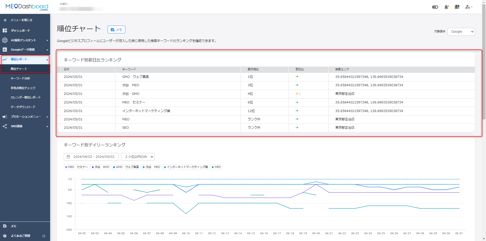
- 前日比、表示順位、検索エリアを確認し、どのキーワードが上がったか、下がったかを見ます。
2. 順位チャートを確認する
- 店舗を開くFoodLuck MEOにログインし、確認したい店舗の管理画面を開きます。
- 順位チャートを開く左メニューから「順位レポート」>「順位チャート」を選びます。
- 対象媒体を選ぶGoogle、Yahoo!など、見たい媒体を選択します。通常はGoogleを中心に確認します。
- キーワード別前日比を見る前日から順位が上がった・下がったキーワードを確認します。
- 推移グラフを見る期間を切り替え、3位以内、10位以内、20位以内、すべての表示範囲を使い分けます。
FAQ画像: キーワード別デイリーランキング
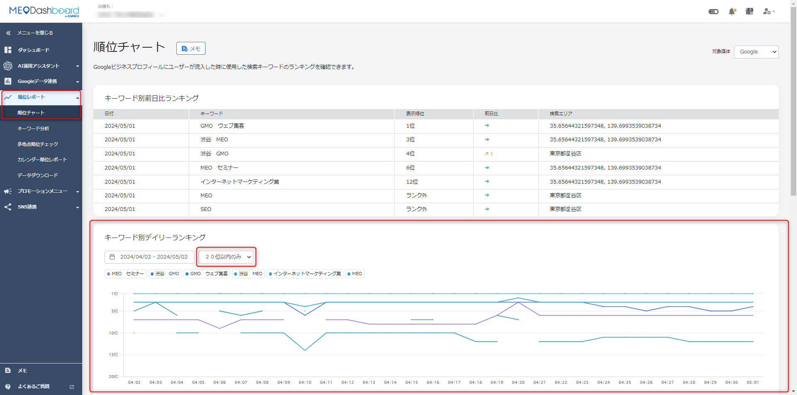
- 任意の期間で、キーワードごとの順位推移を確認できます。
- 初期表示は20位以内のみです。21位以下も見たい場合は「すべて」に切り替えます。
FAQ画像: 全キーワード平均値デイリーランキング
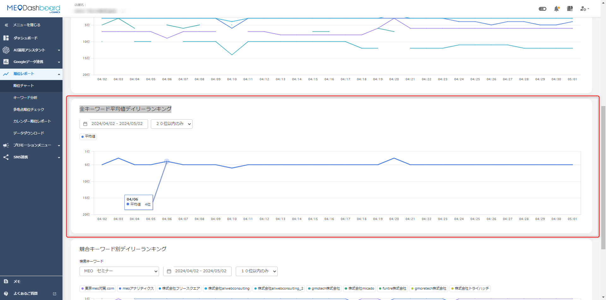
- 設定キーワード全体の平均順位を見ることで、店舗全体の検索状況をざっくり把握できます。
- 例として、あるキーワードが4位、別のキーワードが6位の場合、平均は5位として見ます。
| 順位取得のタイミング FAQでは、順位チャートは1日2回、10時頃にGoogle検索（ブラウザ）、20時頃にGoogleマップの順位を取得し、2回のうち順位が良かったものをDashboardに表示すると説明されています。時間帯によって順位が変わることがあるため、日々の細かな差より推移を見ることが大切です。 |
|---|
3. キーワード分析を見る
キーワード分析では、上位表示されている検索キーワードの順位推移や、3位以内率を確認します。飲食店では、地域名、業態名、主力メニュー、利用シーンのキーワードが重要です。
| 項目 | 意味 | 使い方 |
|---|---|---|
| 最高順位 | 当月で一番高く表示された順位と検索エリア | 強いキーワードを把握します。 |
| 最低順位 | 当月で一番低かった順位と検索エリア | 改善が必要なキーワードを見つけます。 |
| 3位以内率 | 3位以内に入った回数 ÷ キーワード数 × 日数 | 地図検索で目立てているかを見ます。 |
| GBPの検索総数 | 直近1ヶ月のキーワード検索数の合計 | そもそも検索されている言葉かを確認します。 |
| 4位から10位のキーワード | あと少しで上位に入れるキーワード | 投稿・写真・クチコミ対策の優先候補にします。 |
FAQ画像: キーワード分析の概要
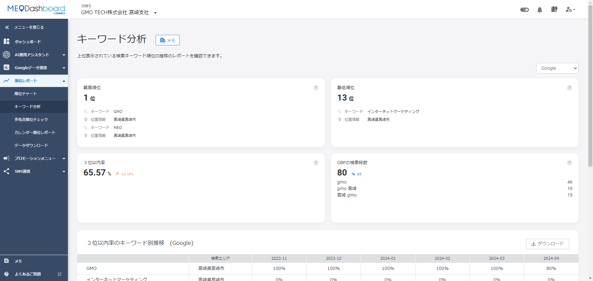
- キーワード分析は店舗ページ限定機能です。
- 3位以内率、検索総数、キーワード別推移を見て、伸ばすキーワードを決めます。
FAQ画像: キーワード分析の詳細一覧
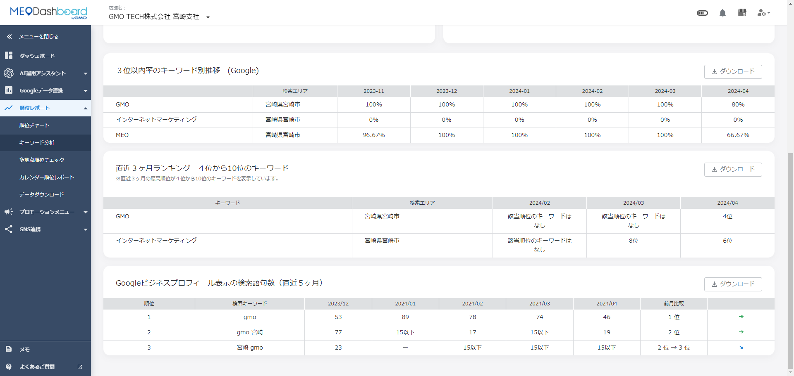
- 検索語句数やキーワードごとの順位を確認し、店舗情報や投稿内容に反映します。
4. カレンダー順位レポートを見る
カレンダー順位レポートでは、Googleビジネスプロフィールにユーザーが流入した時に使われた検索キーワードについて、1ヶ月間の日次順位レポートを確認できます。月次報告や証憑確認に向いています。
- 店舗ページを開く確認したい店舗のページを開きます。
- カレンダー順位レポートを開く左メニューから「順位レポート」>「カレンダー順位レポート」を選びます。
- 条件を指定する対象年月、検索キーワード、対象媒体を選択します。
- 拡大表示を見る1ヶ月分を一覧で確認したい場合は「拡大表示」をクリックします。
- 日次順位レポートを確認する日ごとの順位と、Googleマップのキャプチャを確認します。
FAQ画像: カレンダー順位レポート
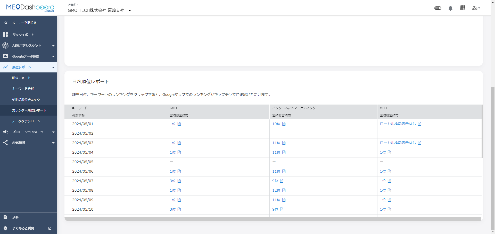
- 月ごとの順位推移を一覧で確認できます。
- 対象年月・キーワード・媒体を切り替えて見ます。
FAQ画像: 日次順位レポートのキャプチャ
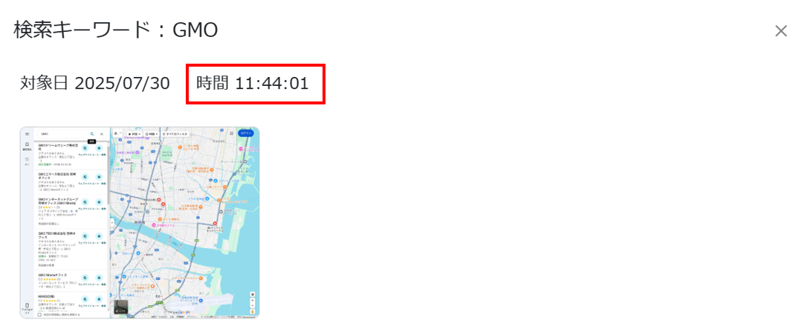
- 証憑画像には、検索キーワード、対象日、取得時刻が表示されます。
- 1日に2回順位取得を行い、そのたびに順位が良かったものへ差し替えて掲載されます。
5. 多地点順位チェックを見る
多地点順位チェックは、店舗を中心にした商圏内で、どの地点から検索した時に上位表示されるかを見る機能です。「近くの居酒屋」「ラーメン」など、検索地点から店舗までの距離が順位に影響しやすいキーワードを見る時に役立ちます。
FAQ画像: 多地点順位チェックの計測結果
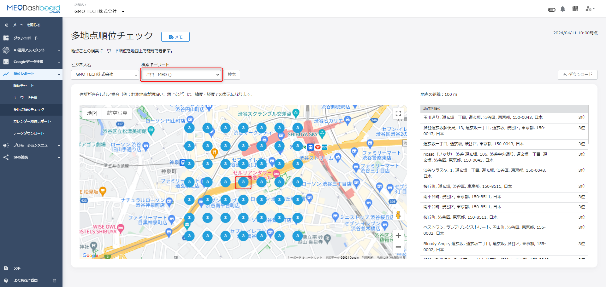
- 店舗を中心として、選択したキーワードの順位が地図上に表示されます。
- 青や赤などの色分けで、強い地点・弱い地点を把握します。
- 多地点順位チェックを開く左メニューから「順位レポート」>「多地点順位チェック」を選びます。
- ビジネス名とキーワードを選ぶ確認したい店舗と検索キーワードを選択します。
- 検索する検索ボタンを押すと、店舗周辺の地点別順位が表示されます。
- 弱い地点を確認する順位が低い地点を見て、競合、距離、写真、クチコミ、投稿状況を確認します。
| 項目 | 内容 | 注意点 |
|---|---|---|
| 計測範囲 | 店舗を中心に600mから60km四方 | 地点間隔により広さが変わります。 |
| 地点数 | 7×7の合計49地点 | 商圏の強弱を見るための目安です。 |
| 地点間隔 | 100mから10km | 100mなら一辺600m、10kmなら一辺60kmになります。 |
| 取得日 | 毎週木曜日 | 画像ダウンロードも木曜日のみ選択可能です。 |
| 表示されない場合 | 有料オプション未契約、または権限・設定の問題 | 契約済みで表示されない場合はFoodLuck側へ連絡します。 |
FAQ画像: 多地点順位チェックの検索エリア
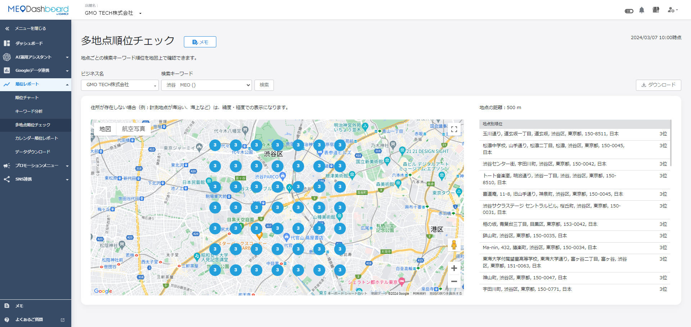
- 店舗を中心に、49地点の順位を確認します。
- 地点ごとの順位差から、商圏内で強い場所・弱い場所を読み取ります。
FAQ画像: 多地点順位チェックの画像ダウンロード
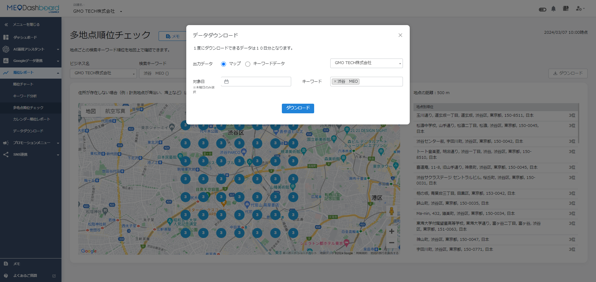
- 過去の多地点順位画像は「ダウンロード」から取得できます。
- データ取得は毎週木曜日のため、対象日は木曜日のみ選択できます。
| 設定変更はFoodLuck側に相談 多地点順位チェックの地点間隔やキーワード設定は、設定画面から登録する操作を伴います。日常的に現場スタッフが触る項目ではないため、変更したい場合はFoodLuck側へ依頼してください。 |
|---|
6. 検索エリアと順位差の考え方
Googleマップ検索は、検索する場所のIPやGPS情報をもとに順位が変わります。検索地点が200m違うだけでも順位が変わることがあるため、スマホで見た順位とDashboardの順位が完全に一致しない場合があります。
- スマホやPCで検索した順位とDashboardの順位が違う場合、検索エリア、計測時間、検索履歴、位置情報の違いが原因になりやすいです。
- 順位チャートは指定した検索エリアで、実際にWEB検索を行い、画面キャプチャを保存して順位を表示します。
- 多地点順位チェックは、Google APIを経由して店舗周辺の地点別順位を表示します。
- このため、順位チャートと多地点順位チェックの順位が一致しない場合があります。
- 検索エリアが未設定、または実際の商圏とずれている場合は、FoodLuck側へ確認します。
FAQ画像: ローカル検索表示なし・競合ナレッジパネル
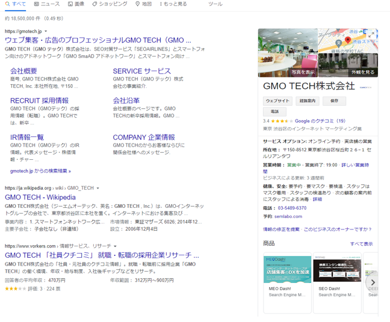
- ローカル検索表示なしは、検索結果にマップ表示が出ていない状態です。
- 競合ナレッジパネルは、検索結果に競合1社のナレッジパネルのみが表示されている状態です。
| ランク外の意味 FoodLuck MEOでは、指定キーワードの検索結果を60位まで確認し、確認できなかったものをランク外と表記します。ランク外が出た時は、キーワードが広すぎないか、検索エリアが適切か、店舗情報・写真・投稿・クチコミが整っているかを確認します。 |
|---|
7. 競合順位・Yahoo!順位を見る
競合キーワード別デイリーランキングでは、設定キーワードで検索した時の競合店の順位推移を確認できます。自店だけでなく、上位に出ている競合の写真、クチコミ、投稿、メニュー、店舗情報を見て、自店の改善に活かします。
FAQ画像: 競合キーワード別デイリーランキング
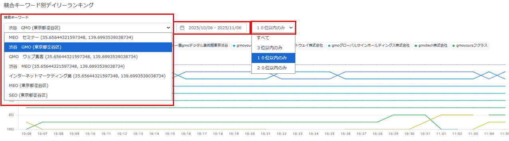
- キーワード、表示件数（3位以内、10位以内、20位以内、すべて）を切り替えて確認できます。
- グラフは最終日の上位20店舗を基準に表示されます。空白はその日20位以内に入っていないこと、「・」は当日のみ20位以内に入ったことを示します。
| Yahoo!順位の見方 Yahoo! JAPANの検索結果は、検索キーワードとの関連性、Webサイトの信頼性、コンテンツの質などの影響を受けます。Yahoo.co.jpの表示順位と基本的には同じですが、ジャンルで絞り込んだ場合とそうでない場合で順位が違うことがあります。飲食店の現場確認ではGoogleを中心にしつつ、Yahoo!は補助的に見ます。 |
|---|
8. よくある表示・計測の注意
| 状態 | 原因 | 対応 |
|---|---|---|
| 推移グラフで順位が出ない | 初期表示が20位以内のみで、21位以下が非表示になっている | 表示範囲を「すべて」に切り替えます。 |
| それでも出ない | Dashboard側で読み取りができていない可能性 | 販売店またはFoodLuck側へ問い合わせます。 |
| 多地点の住所が市名や日本と出る | 計測地点が海上や住所のない場所になっている | 緯度経度表示になる場合があります。異常ではないことがあります。 |
| 数字の羅列が出る | 緯度経度を表示している | 住所が存在しない地点として読みます。 |
| 多地点順位チェックが左メニューにない | 有料オプション未契約、または設定・権限の問題 | 契約済みの場合はFoodLuck側へ確認します。 |
| 自分で検索した順位と違う | 検索地点、時間、位置情報、検索履歴が違う | 完全一致ではなく、推移と傾向で判断します。 |
FAQ画像: 推移グラフで順位が出ない場合
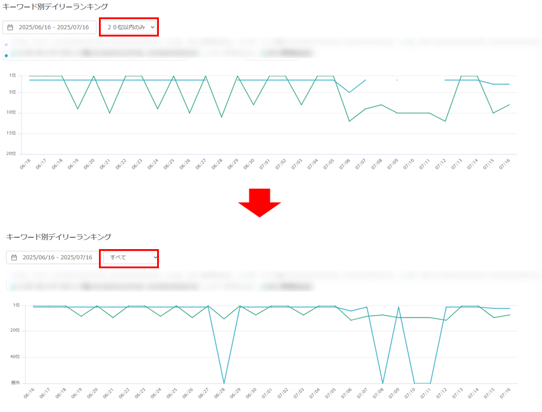
- 20位以下が非表示になっている場合は、表示範囲を「すべて」に変更します。
- 自店舗ナレッジパネル、競合ナレッジパネル、MAP表示なしは推移グラフ上では圏外表示になります。
9. 飲食店の月次チェックリスト
□ 主要キーワードの順位が前月より上がったか、下がったか確認した
□ 3位以内率が上がっているか確認した
□ 4位から10位にいる、あと少しで伸ばせそうなキーワードを確認した
□ 順位が下がったキーワードについて、競合の写真・クチコミ・投稿・店舗情報を見た
□ 順位が上がっているのにアクションが増えない場合、インサイトと合わせて確認した
□ 多地点順位で弱い地点があれば、商圏・競合・距離の影響を確認した
□ 検索エリアが実際の商圏と合っているか確認した
□ 月次報告が必要な場合、カレンダー順位レポートや多地点画像を保存した
| 順位改善につなげる見方 順位が悪いキーワードをただ眺めるのではなく、そのキーワードで検索するお客様が何を求めているかを考えます。たとえば「地域名 居酒屋」で弱いなら外観・店内・宴会情報、「地域名 ランチ」で弱いならランチメニューや写真、「個室」「飲み放題」などで弱いなら属性・投稿・写真・クチコミ内容の整備が改善候補になります。 |
|---|
10. この資料に反映したFAQ記事
順位カテゴリ配下のFAQ記事を、現場の確認順に再構成して反映しています。日常確認、キーワード分析、多地点順位、カレンダー順位、検索エリア、注意事項に分けて整理しました。
| No. | FAQ記事 | 反映先 |
|---|---|---|
| 1 | Yahoo!の順位表示について | 7. 競合・Yahoo |
| 2 | 「ローカル検索表示なし」と「競合ナレッジパネル」の表示について | 6. 検索結果表示 |
| 3 | カレンダー順位レポート | 4. カレンダー |
| 4 | カレンダー順位レポートに掲載している順位について | 4. カレンダー |
| 5 | キーワード分析 | 3. キーワード分析 |
| 6 | キーワード別デイリーランキングの推移グラフで、キーワードの順位が出ない | 8. 注意 |
| 7 | スマホやパソコンで検索した際の順位とMEOdashboardで表示されている検索順位について | 6. 検索エリア |
| 8 | 多地点順位チェックが左側ナビゲーションに表示されない件について | 5・8. 多地点 |
| 9 | 多地点順位チェックの、地点別順位の数カ所が数字の羅列になっている | 5・8. 多地点 |
| 10 | 多地点順位チェックの「地点別順位」の住所表記が〇〇市や日本となっている場合 | 5・8. 多地点 |
| 11 | 多地点順位チェックの画像ダウンロードについて | 5・8. 多地点 |
| 12 | 多地点順位チェックの計測結果について | 5・8. 多地点 |
| 13 | 多地点順位チェックの計測間隔 | 5・8. 多地点 |
| 14 | 多地点順位チェックの設定方法 | 5・8. 多地点 |
| 15 | 多地点順位チェックの順位表示の検索エリアについて | 5・8. 多地点 |
| 16 | 多地点順位チェック機能について | 5・8. 多地点 |
| 17 | 検索エリアについて | 6. 検索エリア |
| 18 | 検索エリアの指定について | 6. 検索エリア |
| 19 | 競合キーワード別デイリーランキングの見方について | 8. 注意 |
| 20 | 順位チャートの取得タイミングはいつですか？ | 2. 順位チャート |
| 21 | 順位チャートの確認方法 | 2・6. 順位チャート |
| 22 | 順位チャートの順位と多地点順位チェックの順位の相違 | 5・8. 多地点 |
| 23 | 順位計測のランク外表記について | 6・8. 注意 |